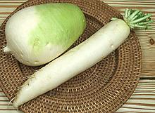
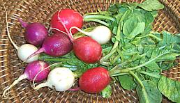
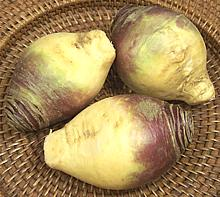

SAFARI
Users
Varieties
Horseradish
[Meerrettich (German), Seiyo Wasabi (Japan); Armoracia rusticana]
This pungent white fleshed root was known in Roman times, probably
originating in southeastern Europe. Today it is grown worldwide for use
as a condiment, particularly popular in Germany, Poland, Russia and
surrounding countries. Actually, about 85% of the worlds supply is
grown in the bottomlands surrounding Collinsville, Illinois where the
soil is just the way horseradish likes it. A mixture of horseradish,
mustard seeds and green food coloring is used as a condiment in
Japanese sushi bars, even in Japan, because real
Wasabi is so costly and perishable.
Details and Cooking.
Maca
[Maca-maca, Maino, Ayak chichira, Ayak willku; Lepidium meyenii (USDA) alt Lepidium peruvianum (current)]
Native to the Andes mountains of Bolivia and Peru this plant looks very much like a radish, but is closely related to Garden Cress. The three most commonly cultivated and exported varieties are Cream, Red and Black. They are used both as food and as medicinals - said to enhance strength and endurance and reputed to have aphrodisiac properties. This has not been clinically confirmed, though some tests show an increase in libido among healthy men. Nonetheless, this root is included in such herbal "enhancement" potions as actually attempt to include some active ingredients.
In its native region maca is boiled and mashed, dried and ground into
flour for baking, fermented into a weak beer (chicha de maca) and
the leaves are used in salads. Today maca cultivation has been greatly
expanded to feed the "health food" and supplement industry. Maca is
listed as a prescription herb in Norway but is available over the counter
pretty much everywhere else.
Photo by Vahe Martirosyan distributed under license
Creative Commons
Attribution 2.0 Generic.
Radishes
[Raphanus sativa]
Radishes are a group of cabbages grown mostly for their pungent roots, though some greens are also used. Primarily used uncooked, radishes are a staple in salads and various appetizers.
Black Radish[Spanish Black Radish]
This Radish is particularly favored in Northeastern Europe, Poland,
Lithuania, Russia and Hungary, so how it got called "Spanish" in the
U.S. is beyond me. This is not a mild radish, falling somewhere in
between the red radish and horseradish in pungency, so if you can't
take the heat use the milder Daikon
instead. Note that black radish is a lot drier than other radishes so
substitutes may make recipes too watery. You will find Black Radish
sold in markets serving Polish, Russian and Hungarian communities.
Daikon Radish [Japanese Radish, Korean Radish; Turnip (Asian product labeling); Houa pak kaat kao (Laos)] While essential to Japanese, Korean and Chinese cuisines, these large white radishes are thought by botanists to have originated as far west as the Mediterranean and taken to East Asia some time before 500 BCE. The Japanese carrot shape radishes are now available throughout the U.S. even in regular supermarkets. Asian markets may have several shapes and will also carry both roots and leaves in various fresh, dried, pickled and salted forms. Most markets remove the leaves because they yellow quickly but some farmer's markets will have them with leaves on. Korean markets have smaller varieties with the tops on. These are fairly mild radishes, generally similar to a very mild
red radish. Most Japanese daikons are shaped like fat carrots and are
marketed in various sizes from a few ounces to several pounds, but in
Japan spherical varieties are also grown. Korean daikons are fatter
and shorter, often quite cylindrical. The photo specimens are: Korean,
4-3/4 inches diameter, 7 inches long and 3-1/4 pounds, about average
size; Japanese, 2-1/4 inches diameter, 12 inches long and 1-1/2
pounds, again about average.
Details and Cooking.
Red Radish Here we have the standard American red radish (which is not always red) found in every supermarket and farmer's market in the country. An excellent addition to salads or just eaten whole, but the greens are usually in not very good shape and are a bit coarse anyway. For Slavic salads try to get Black Radish, or lacking that use Daikons, but for American recipes this is always the radish expected unless specifically stated otherwise. There is pretty much no difference in flavor or hotness with color or even shape (elongated versions are also sold. |
Rutabaga
 [Swede, Yellow Turnip; Turnip rooted cabbage (obs); Kalrot (Sweden (lit. Cabbage Root)); Rotabagge (Swedish dialect); Neep, Turnip (Scot); Turnip (Ireland & Atlantic Canada); Brassica napobrassica]
This root originated in either northern Germany or Sweden. It is an unusual cross between a cabbage and a turnip. In Scotland and northeastern Canada it is simply "turnip" because the regular white turnip is little known in those regions.
Rutabagas are little grown or eaten in Germany due to a long standing reputation as starvation food. One winter during World War I, called "The winter of Swedes", there was almost nothing else to eat and they got tired of them. They were brought to Ireland as cattle feed, so were a hard sell there as human food even during the potato famine.
We've heard there's been a lot of talk on the Internet by Health Food
enthusiasts about the "health benefits" of Rutabagas, so we are linking
to an article with actual research on the subject:
Does Rutabaga
Have Health Benefits?.
Turnip vs. Swede, etc.
-Translation Table
When using cookbooks written in English it can be difficult to know what is meant by "Turnip" because of regional differences in English speaking countries. Asian cookbooks written in English toss even more confusion into the mix. Here's what is actually meant (unless someone has treacherously compensated for American readers).
| United States | Turnip | Rutabaga | Daikon | Jicama |
|---|---|---|---|---|
| Sweden | Vändningen | Kalrot Rotabagge | ||
| England | Turnip | Swede | Mooli | Yam Bean |
| Ireland | Swede | Turnip | ||
| Scotland | Swede, Tumshie White Turnip |
Turnip Neep | ||
| Cornwall / Wales | Turnip | Swede | ||
| Canada - Atlantic | White Turnip | Turnip | ||
| Canada - most | Turnip | Rutabaga | ||
| Australia New Zealand | Turnip | Swede | ||
| India | Turnip Shalgam |
Swede | Mooli | |
| Malaysia, Singapore Philippines |
Turnip | |||
| Asia (most) | Turnip |
Turnip
[White Turnip, Swede (Atlantic Canada, Ireland, Scotland), Brassica Rapa]
Turnip - AsianWhen you see East Asian recipes calling for "Turnip", or bags of "Salted Turnip Leaves" or "Preserved Turnip", what is really meant is one or another variety of Daikon Radish. Turnip - BabyThese are usually special small varieties grown for the yuppie salad trade. The flesh is mild and may be of various colors: white, yellow, orange or red. They are generally sold whole with leaves on and need to be used quickly as they don't keep well. I haven't seen them here in the Los Angeles region - all those yuppies up north in Silicon Valley are probably willing to pay more. Turnip - European [B. Rapa rapa]
[B. Rapa rapa]
This turnip is grown all over the U.S. Europe, England, Wales, and Cornwall, and available in all supermarkets in these regions. It is not so much grown in Scotland and Ireland where the Swede dominates, but is available in larger supermarkets even there. Until the introduction of Potatoes from South America, turnips were of critical importance in Northern Europe, for the survival of both people and their livestock through the winter. They grow well in colder climates, store plenty of food value, and can be kept in a root cellar for some months after harvest. They can grow to over 2 pounds but for human consumption are usually harvested much smaller when they are more tender. The greens are also edible but commercial turnip greens are usually from a different variety with big leaves and small roots. |
Wasabi
 [Japanese Horseradish; Wasabia japonica]
[Japanese Horseradish; Wasabia japonica]
This very pungent green fleshed root is used grated as a condiment, particularly to accompany sushi. Most sushi lovers, however, have never tasted wasabi. Pretty much all sushi bars in the US and nearly all in Japan serve a fake wasabi made from Horseradish, mustard seeds and green food coloring. Real wasabi (hon-wasabi) has a more refined hotness, a sweet after-taste and is not nearly so bright a green as the fake. It's also very expensive and the flavor is extremely perishable.
Imported "wasabi" purchased as tiny cans of dried powder or tubes of paste is all faked up from horseradish. The Japanese can export horseradish under the name "wasabi" because the Japanese name for horseradish is "seiyo wasabi" (Western wasabi). They can even call it "real wasabi".
Several companies set up wasabi production in North America. At first
they expected to export it to Japan, but local demand has been so great
there's little left to export. Two grades are grown in North America:
sawa-wasabi (semi aquatic - for culinary use) and oka-wasabi (field grown
- for the nutritional supplement industry). Fresh product is available
from these growers (see Details and
Cooking for suppliers). Photo "borrowed" from
Pacific Coast Wasabi.